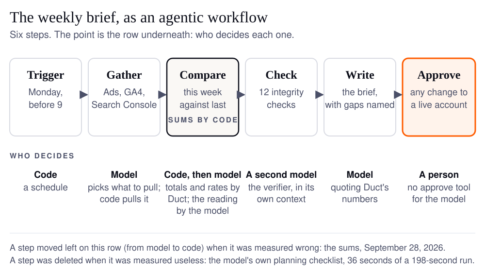

An agentic workflow is a job split into steps where a language model decides some of the steps as it goes (what to pull, what matters, what to say) instead of following a script written in advance. The ones that work in practice mix three deciders: code for anything that must be exact, the model for judgment, and a person for anything that touches a live account.
That is the whole definition. The rest of this post is one real workflow, the Monday growth brief, walked step by step, including the step I took away from the model after it got a sum wrong.
Why the weekly brief, of all jobs?
Because it is the job I built Duct to stop doing by hand. Before Duct, Monday meant Google Ads, GA4 and Search Console in three tabs, numbers copied into a sheet, and three paragraphs on what moved. I was bad at it and I did not enjoy it; I leave it to you to guess which came first.
It is also the job most people mean when a vendor says "agentic workflow" to them. If you want to know whether the phrase means anything, pick a job you already do by hand, and see what changes when a model is allowed to decide parts of it. If you do yours by hand today, the weekly brief template is the manual version this post automates.
What is the difference between an agentic workflow and workflow automation?
Who decides the path. In automation, a person decides every step in advance and the software repeats them. In an agentic workflow, a model decides at least one step while the job runs.
Anthropic's engineers Erik Schluntz and Barry Zhang drew the line most cleanly in Building effective agents (December 2024): "Workflows are systems where LLMs and tools are orchestrated through predefined code paths," while agents "dynamically direct their own processes and tool usage." They also give the advice most vendors skip, recommending "finding the simplest solution possible, and only increasing complexity when needed," because "workflows offer predictability and consistency for well-defined tasks."
IBM's definition says the same thing from the other side: traditional automation "follow[s] predefined rules and design patterns," and agentic workflows are "dynamic, offering more flexibility by adapting to real-time data and unexpected conditions." The phrase owes much of its spread to Andrew Ng's March 2024 letter in The Batch, where he showed GPT-3.5 going from 48.1% to "up to 95.1%" on a coding benchmark once it was "wrapped in an agent loop."
Here is the test, applied to the Monday brief:
| Step | Fixed automation | Agentic workflow | Who decides, in Duct |
|---|---|---|---|
| Trigger | Monday 07:00, always | Monday 07:00, always | Code |
| Gather | the same three reports, every week | the model picks which entities to pull for this week's question | Model picks, code fetches |
| Compare | a sheet formula per cell | totals and rates computed in code; the model reads them | Code, then model |
| Check | none, or a threshold alert | a verifier model runs integrity checks and names what it could not check | A second model |
| Write | a template with numbers dropped in | a brief written for this week, quoting the computed numbers | Model |
| Approve | nothing changes | proposed changes wait for a person | A person |
Only three of the six steps are the model's. That ratio is the point. A workflow where the model decides everything is not more agentic; it is less checkable.
What are the steps of an agentic workflow?
Six, for the brief: trigger, gather, compare, check, write, approve. The figure shows them with the row that matters, who decides each one.

Trigger. A schedule. In Duct the unattended run is one HTTP call, POST /api/insights/generate, which takes a project and a sentence ("the weekly brief") and returns a brief as a stored artifact. The honest limit, before a commenter finds it: Duct does not yet own the clock. The endpoint exists and nothing in the product calls it on a schedule, so until the scheduler ships, a Monday run is a request you, or a cron job, send.
Gather. The model reads what Duct remembers about the project (goals, decisions, the budget change last Tuesday), looks at which connectors are attached, and decides which data to pull: Google Ads campaigns, GA4 landing pages, Search Console queries, Mixpanel events. It calls one tool, FetchData, with an entity and a date window. The model chooses; code does the fetching, with the credentials resolved on the server so the model never sees a key.
Compare. This week against last, by channel and by device. The totals, rates and subtotals are computed by Duct's code and handed to the model with a note that says, in effect, quote these and never add rows yourself. More on why in a moment.
Check. Before the brief carries a recommendation, the main model hands the data to a second model, the verifier, which runs in its own context so the check plumbing does not crowd out the analysis. It has twelve checks in five families: is this real traffic, is it still on, are these units comparable, did the money settle, where is the ask. A check whose data is not connected is reported as a gap, not skipped quietly.
Write. The brief itself, as a markdown artifact: what moved, why it probably moved, what to do. The unattended run cannot ask a question, so the prompt tells the model plainly: "There is nobody to ask." Where it would have asked, it takes the most defensible reading and states the assumption in the same sentence that depends on it.
Approve. If the brief proposes a change (pause a campaign, move budget), the change is staged and waits. There is no approve tool in the list the model can call; the file that holds the execution tools says so in its docstring. A person presses the button, or does not. The reasoning behind that gate has its own post: human in the loop for agents that can spend.
Which step should the model never do?
The arithmetic. In September, while writing the design record on whether the agent should analyze data with code, I replayed a real brief against a recorded session. The model's reasoning was right. Its addition was not: it reported 2,504 sessions where the rows it had in front of it summed to 2,681. Nothing in the brief looked wrong. A wrong total is set in the same font as a right one.
That is not a Duct bug so much as a property of the tool. A February 2026 paper, AI-rithmetic by Alex Bie and colleagues, tested frontier models on plain integer addition and found that "all frontier models suffer significantly degraded accuracy" as the number of digits grows, with most errors coming from "operand misalignment or a failure to correctly carry." A language model adding 250 numbers is a bit like me splitting a restaurant bill: quick, confident, and best checked by someone holding a calculator.
So the step moved. Since pull request #238, merged September 28, every fetched report arrives with its totals, rates and per-channel subtotals computed in totals.py, and the prompt says to quote them. Two rules live in that file and are worth stealing for any report you build:
- An average is never averaged. The mean of 250 per-page bounce rates is not the site's bounce rate. A ratio metric (CPA, ROAS, CTR) is its numerator's total over its denominator's; anything else is a mean weighted by what the catalog says to weight it by (bounce rate by sessions, position by impressions).
- Say what the total covers. A report the source cut short says so, so a partial sum is never quoted as the whole.
A second step went the other way: it was deleted. The model used to keep its own planning checklist, ticking off steps as it went. Measured on a real brief, two of its five turns did nothing but rewrite that checklist, 36 seconds of a 198-second run. Progress is now derived from the tool traffic instead (every fetch is a step), and the model spends its turns on the work. The measurement, and the decision, are in the runner's docstring.
The lesson generalizes. Every step in an agentic workflow sits in a lane (code, model, person), and it should be allowed to move lanes when a measurement says so. The design is the row underneath the boxes.
How do you know the workflow worked?
You check the data before you trust the conclusion, and you measure the workflow before you change it. Two different things.
The first is the verifier's job, and the reason it exists is a month on a client's Google Ads account where most of the working turns went on establishing whether a number could be trusted at all, and every serious defect looked healthy on a dashboard (the numbers are in the agent vs chatbot guide). The checks are those lessons, written down once.
The second is evals. The arithmetic error was found by replaying a recorded brief and the checklist waste by timing a real one; what keeps both fixed is the eval gate, where a change to the prompt or the tools runs trials against a baseline on synthetic accounts before it merges. What is harness engineering covers how that gate works and what it costs to run.
How do you draw your own weekly report as an agentic workflow?
Start from the manual version and label every step with a lane. Fifteen minutes, one sheet of paper:
- Write down what you do on Monday, in order, as you actually do it. Use the weekly brief template if you do not have one.
- Mark each step code, model or person. Anything exact (sums, rates, date windows) is code. Anything that needs reading (what matters, why it moved) is model. Anything that changes a live account is person.
- Add a check step before the write step, even if the check is one question: is this number real?
- Decide what happens when the model cannot ask. If the answer is "it guesses silently," you are not ready to run it unattended.
- Run it beside the manual version for a month, and compare the two every week.
If step 2 puts every step in the model's lane, you have described a chatbot with tools, not a workflow. AI agent vs chatbot vs automation is the post for telling those apart; the full guide to AI agents for marketing puts this workflow beside the other jobs an agent fits.
FAQ
What is the difference between an agentic workflow and an AI agent?
An AI agent is the thing that decides: a model with tools, memory and a loop. An agentic workflow is a job, broken into steps, in which an agent decides some of the steps and code or a person decides the others. The weekly brief is a workflow; the model inside it is the agent.
How often should an agentic workflow run?
As often as the decision it feeds. A growth brief that informs a Monday planning conversation runs weekly, before the conversation. Running it daily produces a daily brief nobody reads, and the model spends money reading data that has not changed. Match the cadence to the meeting, not to what the software can do.
Can an agentic workflow run with no human at all?
Reading, comparing and writing can run unattended, with the rule that a question the model cannot ask becomes a stated assumption in the output. Changing a live account should not. In Duct the unattended run has no approve tool at all, so the worst an unattended brief can do is be wrong on the page, where a person sees it.
Is n8n or Zapier an agentic workflow?
Not by default. Both are automation: a person designs the path and the tool repeats it. Either becomes agentic the moment one step hands a decision to a model, such as choosing which report to pull or deciding whether a drop is worth flagging. The useful question is which steps you have handed over and whether a check follows them.
What does a weekly brief cost to run?
Under your own model key, a brief is one to twenty data pulls and a handful of model turns, so the bill is the model's, not a per-seat fee. The verifier adds a second model's worth of turns. In Duct's measurements the verifier took 66 seconds of a 198-second brief, which is the price of a number you can trust.